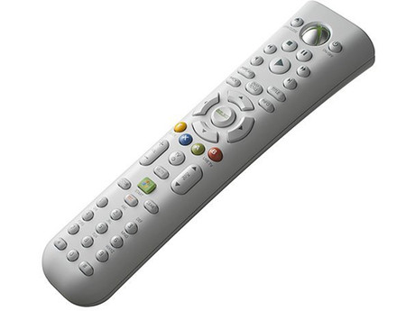

Media remote
General Information

Standard Media Remote•The standard remote (as opposed to the Universal Media Remote) was only released in limited quantities with Xbox 360 premium packages at launch.
- The difference between the Universal Media Remote and the Standard Remote appears to just be the button additions.
- The remote uses the IR port located on the front of the Xbox 360.
- Some Windows Media Center Edition computers recognize this remote as a normal Media Center remote.
Confirmed Facts
- All Windows Media Center remotes are recognized by the Xbox 360.
Linux Facts
Big remote Big remote
- IRCODE , Function
- {'26','Button Y'},
- {'25','Button B'},
- {'24','DVD menu'},
- {'23','BACK'},
- {'22','OK'},
- {'20','Button left'},
- {'21','Button right'},
- {'19','Stop button'},
- {'18','Pause button'},
- {'17','Rec button'},
- {'16','Play button'},
- {'15','Fast rewind \<\<'},
- {'14','fast foward >>'},
- {'11','Volume down'},
- {'10','Volume up'},
- {'09','Button 9 on ke*ypad part'},
- {'08','Button 8 on ke*ypad part'},
- {'07','Button 7 on ke*ypad part'},
- {'06','Button 6 on ke*ypad part'},
- {'05','Button 5 on ke*ypad part'},
- {'04','Button 4 on keypad part'},
- {'03','Button 3 on keypad part'},
- {'02','Button 2 on keypad part'},
- {'01','Button 1 on keypad part'},
- {'00','Button 0 on keypad part'},
- {'1a','Go to ending >|'},
- {'1b','Go to beginning |\<'},
- {'1c','Unknown'},
- {'1d','100 on remote'},
- {'1e','Button up'},
- {'1f','Button down'},
- {'0a','Clear'},
- {'0b','ENTER'},
- {'0c','Unknown'},
- {'0d','Windows Media Start'},
- {'0e','Mute'},
- {'0f','Info'},
- {'4f','Display'},
- {'51','Title'},
- {'64','Big X button on top, use as alternative 'on'?'},
- {'68','Button X'},
- {'66','Button A '},
- {'6c','Channel up'},
- {'6d','Channel down'};
the small remote 'image insert here'
- IRCODE , Function
- {'64','guide'},
- {'19','stop'},
- {'18','pause'},
- {'16','play'},
- {'15','rewind'},
- {'14','fast forward'},
- {'1A','chapter next'},
- {'1B','chapter prev'},
- {'4F','display'},
- {'51','title'},
- {'24','dvd menu'},
- {'23','back'},
- {'0F','info'},
- {'1E','up'},
- {'1F','down'},
- {'20','left'},
- {'21','right'},
- {'22','ok'},
- {'12','A'},
- {'25','B'},
- {'13','X'},
- {'26','Y'},
- {'0D','windows'},
- {'17','record'};
Proof of concept code by Icekiller
/*
* Example code of how to use the build in IR of the xbox 360
* Code rewritten based on tmbinc's smc.c
* free to use under GPL
*
* 20 januari 2008 by Icekiller
*/
#include <stdio.h>
#include <stdlib.h>
#include <fcntl.h>
#include <getopt.h>
#include <string.h>
#include <time.h>
#define SMC_FILENAME "/dev/smc"
int smc_fd;
void wait(int seconds)
{
clock_t endwait;
endwait = clock() + seconds * CLOCKS_PER_SEC;
while (clock() < endwait) {
}
}
int main(int argc, char **argv)
{
int first = 1;
/* try open SMC. if this doesn't work, bail out. */
smc_fd = open(SMC_FILENAME, O_RDWR);
if (smc_fd < 0) {
perror(SMC_FILENAME);
return 1;
}
while (1) {
unsigned char msg[16];
int option_index = 0, c;
msg[0] = 0x16;
/* prepare message */
memset(msg, 0, 16);
if (c != 'w') {
msg[0] = 0x16;
int i;
if (write(smc_fd, msg, 16) != 16) {
perror("write");
break;
}
}
if ((c == 'w') || (msg[0] < 0x80)) {
int wait_for = msg[0];
while (1) {
msg[0] = 0x16;
if (read(smc_fd, msg, 16) != 16)
perror("read");
int valueread;
valueread = msg[3];
if (msg[0] != 0x16)
switch (valueread) {
case 0x26:
printf("Button Y");
break;
case 0x25:
printf("Button B");
break;
case 0x24:
printf("DVD menu");
break;
case 0x23:
printf("Back");
break;
case 0x22:
printf("OK");
break;
case 0x21:
printf("Button left");
break;
case 0x20:
printf("Button right");
break;
case 0x19:
printf("Stop button");
break;
case 0x18:
printf("Pause button");
break;
case 0x17:
printf("Rec button");
break;
case 0x16:
printf(">");
break;
case 0x15:
printf("<<");
break;
case 0x14:
printf(">>");
break;
case 0x13:
printf("Button X");
break;
case 0x12:
printf("Button A");
break;
case 0x11:
printf("Volume down");
break;
case 0x10:
printf("Volume up");
break;
case 0x09:
printf("Button 9");
break;
case 0x08:
printf("Button 8");
break;
case 0x07:
printf("Button 7");
break;
case 0x06:
printf("Button 6");
break;
case 0x05:
printf("Button 5");
break;
case 0x04:
printf("Button 4");
break;
case 0x03:
printf("Button 3");
break;
case 0x02:
printf("Button 2");
break;
case 0x01:
printf("Button 1");
break;
case 0x00:
printf("Button 0");
break;
case 0x1a:
printf(">|");
break;
case 0x1b:
printf("<");
break;
case 0x1c:
printf("Unknown");
break;
case 0x1d:
printf("Unknown");
break;
case 0x1e:
printf("Button up");
break;
case 0x1f:
printf("Button down");
break;
case 0x0a:
printf("Clear");
break;
case 0x0b:
printf("ENTER");
break;
case 0x0c:
printf("Unknown");
break;
case 0x0d:
printf("WMS");
break;
case 0x0e:
printf("Mute");
break;
case 0x0f:
printf("Info");
break;
case 0x4f:
printf("Display");
break;
case 0x51:
printf("Title");
break;
case 0x64:
printf("Guide");
break;
case 0x68:
printf("Button X");
break;
case 0x66:
printf("Button A");
break;
}
printf("\n", valueread);
if (msg[0] == wait_for)
break;
}
}
wait(1);
}
}
The remote control works as a lowbase of the xbox360, so the power on and off still work in Linux, also you can get all the IR codes into linux. So 'if' a Mediacenter is ever ported to Xbox 360 Linux, you could use the official remote. (IR codes and info retrieved by Icekiller, with SMC.C from tmbinc, small remote by kwkward)